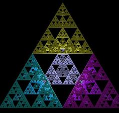

DM : Python et le tapis de Sierpinski

Voici une courte explication du processus de codage par lequel je suis passé afin de réussir
à traçer le triangle du mathématicien iconique des années 1900.
Tapis de Sierpinski, code Python
0] INTRODUCTION : LE TAPIS DE SIERPINSKI
Avant de commencer l'explication du procédé utilisé afin de construire le triangle ou tapis de Sierpinski,
j'aimerais un peu revenir sur le déroulement de la résolution du DM en tant que tel. Initialement, je n'avais pas
réussi à télécharger le code du corrigé du dernier TP et n'avais donc pas pû utiliser ce code. Cette solution hors de portée,
j'ai donc dû me réduire à la seule autre solution restante : les fonctions récursives. Grâce à l'aide de mon père, qui
est chercheur à l'école Polytechnique, j'ai pû un peu mieux comprendre ce qu'étaient ces fonctions et j'ai fini par créer
un code avec lui, simple, mais qui marchait et faisait appel à une de ces fonctions qui s'appellent elles-mêmes. Mais étant
donné que mon professeur m'a fait remarqué qu'il ne voulait pas entendre parler de fonctions récursives, j'ai dû me débrouiller
pour retrouver le code du TP dont je parlais au début, ce que, après de nombreux essais frustrants, j'ai réussi à faire. Voici donc
enfin ci-dessous l'explication du DM en bonne et dûe forme : Bonne lecture !
1] FONCTION : DESSINER
Premièrement, on appelle le module Turtle grâce aux lignes 1 à 6. Les 5 lignes suivantes servent à définir la
fonction "Dessiner", qui perment de... dessiner le tapis de Sierpinski. Elle prend en compte les paramètres géométriques
de la figure comme la longueur d'un côté du triangle, le nombre de côtés ainsi que n. Si un caractère "+" ou "-" est rencontré
lors du traçé du triangle, on tourne la tortue/le crayon vers le bas ou le haut de "angle" degrés. Lorsqu'on rencontre un
"G" ou un "F", la tortue avance du paramètre "longueur".
2] FONCTION : PRINSIERPINSKI
En second temps, on utilise la fonction "PrinSierpinski" afin de changer les chaines permettant de tracer le tapis.
A chaque fois qu'une lettre "F" ou "G" est rencontrée, elle est ensuite transformée en une suite de lettres et de symboles
permettant de changer le traçé de la tortue en étant utilisée par la fonction "Dessiner". Cette fonction prenant en compte
le paramètre "chaine" sert donc à complexifier la figure, à changer la chaine.
3] FONCTION : OPTSIERPINSKI
En troisième lieu, nous avons besoin de tracer plusieurs motifs au sein des uns des autres. Cette fonction permet,
en prenant les retours de la fonction "PrinSierpinski" de mettre à jour en quelque sorte les motifs à tracer par la tortue,
afin de réaliser la figure complète sans accrocs.
4] FONCTION : FINSIERPINSKI
FinSierpinski est la fonction qui permet de tracer 3 petits triangles dans un plus grand triangle global, et d'en
voir donc apparaître 4 à l'écran. Pour cela, elle utilise les données rendues par "OptSierpinski" afin de donner les bons
motifs à tracer à la tortue. C'est ce qui permet d'activement tracer un beau tapis de triangles imbriqués les uns dans les autres.
On termine le programme en donnant des valeurs de bases à "longueur", "angle" et "niter" afin que ce programme puisse commencer à
travailler sur des bases.
5] CONCLUSION
En conclusion, nous définissons d'abord une fonction qui permet à la tortue de dessiner quelque chose, ce quelque chose
est définit par une fonction créant des chaines de caractères, modifiées par une autre fonction, et une dernière fonction permet
au tapis de prendre forme de manière "stylisée et homogène". On n'oublie pas de faire un "setup" de Turtle et de la fenêtre graphique
et de donner des premières valeurs au programme pour que celui-ci marche.
Pour en apprendre plus sur le tapis de Sierpinski
Waclaw Sierpinski
Fonctions récursives, pour les curieux
Retour vers la page principale